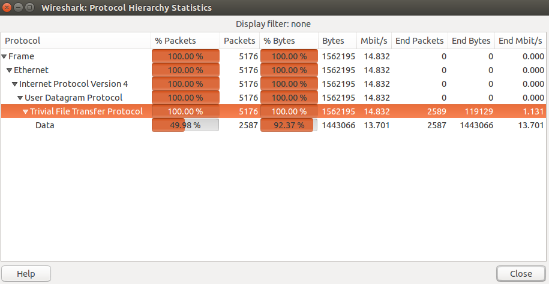

vodka (forensics 400)
01.11.2014 22:13, by the_storm
Category:
Event:
Description: We were given a pcap file called vodka were asked to get out the flag.
Solution:
We opened the pcap file with wireshark and take a look the statistics of the pcap file, we saw that 100% of the packets in the file was mainly tftp protocol packets.
